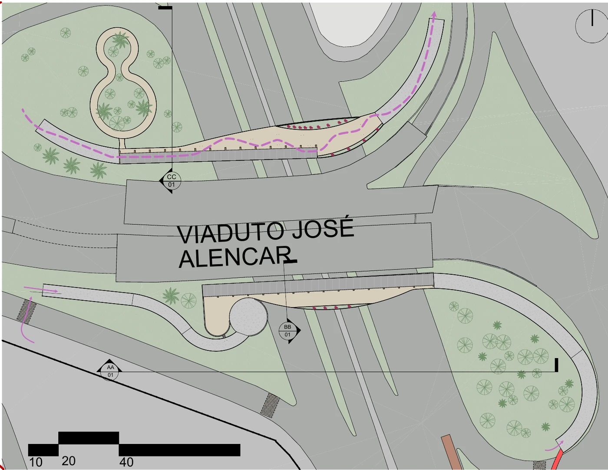
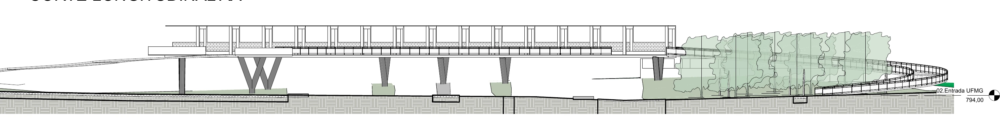

Percorrer
Qualificar calçadas, travessias e conexões, com continuidade dos trajetos, acessibilidade, arborização e iluminação voltada ao pedestre.
Arquitetura e Urbanismo / UFMG / 2026
Mobilidade integrada, espaço público e escala humana em um dos principais eixos de Belo Horizonte.

A Avenida Presidente Antônio Carlos conecta a Pampulha à região central e concentra transporte coletivo, moradia, comércio, serviços e grandes equipamentos. Seu espaço urbano, porém, permanece condicionado à circulação motorizada.
O trabalho identifica diretrizes de qualificação urbanística para o eixo e seu entorno, articulando deslocamentos a pé e de bicicleta, transporte coletivo, áreas verdes e espaços de permanência.
A análise compreende Pampulha, UFMG, Cachoeirinha e Lagoinha. O Setor UFMG é o recorte de aprofundamento projetual.
Quatro setores, diferentes dinâmicas urbanas.
Explore a cartografia que fundamenta as propostas.
Estudo espacial interativo
Explore a relação entre mobilidade,
travessia e espaço público.
Representação volumétrica interpretativa, sem escala, elaborada para explicar as diretrizes. Não reproduz um modelo executivo da autora nem define dimensões de faixas, cotas ou viabilidade. Cenários baseados no capítulo 6.2 da monografia; nenhuma alternativa complementar é apresentada como decisão final.
Do diagnóstico territorial
à experiência cotidiana.
Qualificar calçadas, travessias e conexões, com continuidade dos trajetos, acessibilidade, arborização e iluminação voltada ao pedestre.
Aproveitar áreas livres e espaços subutilizados para descanso, lazer e convivência, associados à vegetação e ao mobiliário urbano.
Manter o MOVE como eixo estruturador, conectar a rede cicloviária e estudar VLT e VLP como alternativas complementares.
Estimular a complementaridade entre moradia, comércio, serviços e atividades culturais, com fachadas voltadas para o espaço público.
Articular atividades com horários complementares à iluminação, à visibilidade dos percursos e ao conforto dos pedestres.
Adaptar áreas residuais e estruturas existentes para funções coletivas, culturais, comerciais e de permanência.
Aprofundamento projetual
Aplicações locais das diretrizes
formuladas para a avenida.
O recorte reúne grandes equipamentos, bairros residenciais e áreas verdes. As intervenções propõem aproximar esses destinos, qualificar os percursos e ampliar as possibilidades de uso do espaço público.
Ler o capítulo da área de estudoViaduto José Alencar
A passarela propõe a transposição da Avenida Presidente Antônio Carlos, separando os deslocamentos de pedestres e ciclistas do tráfego veicular. O percurso incorpora áreas de pausa e sua relação com os espaços arborizados do entorno.
Abrir prancha de projeto
Acesso de pedestres pela avenida, travessia qualificada, arborização e iluminação direcionada ao passeio.
Prioridade aos pedestres, acesso local de veículos e jardim de chuva para ampliar a permeabilidade e apoiar a drenagem.
Conexão cicloviária e percurso de caminhada com segregação, sinalização, iluminação e medidas de redução de velocidade.
Continuidade dos percursos de caminhada e bicicleta, com acesso secundário pela Rua Alcobaça e iluminação.
O olhar sobre a avenida nasce da experiência cotidiana e ganha forma no encontro entre pessoas, campo e cartografia.
Percursos de campo, registros fotográficos, mapeamento e entrevista com a SUMOB se somam à escuta dos usuários. As 60 respostas ao formulário compõem a amostra exploratória da pesquisa.
Projeto de Qualificação Urbanística na Av. Antônio Carlos em Belo Horizonte/MG
Síntese digital da versão de novembro de 2026. O diagnóstico abrange a avenida; o aprofundamento projetual se concentra no Setor UFMG. As intervenções e os cenários de transporte são propostas acadêmicas. Cartografia: Letícia Oliveira Santos, com base em BH Maps, 2026.